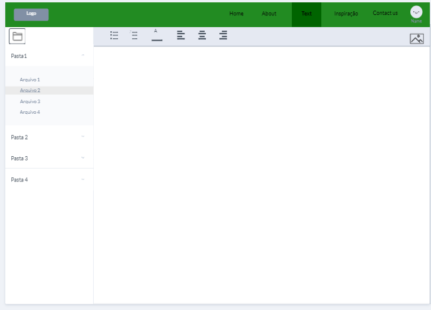

Introdução
Informações básicas do projeto como nome e membros da equipe.
Informações Gerais
- Projeto: Story Arc
- Repositório GitHub: ti-1-pmg-cc-m-20232-g6-estruturar-ideias-para-livros
- Membros da equipe:
Contexto
Detalhes sobre o espaço de problema, justificativas e os objetivos do projeto.
Problema
A dificuldade de organizar ideias para escrever histórias é um desafio comum enfrentado por escritores de diversos gêneros, incluindo mestres de RPGs de mesa, escritores de livros e roteiristas. O problema central reside na complexidade de transformar conceitos abstratos e fragmentados em narrativas coesas e envolventes, frequentemente resultando em bloqueios criativos e frustração para o escritor. Nesse contexto, nossa aplicação será usada tanto em situações casuais como em jogos de RPG, quanto em situações mais profissionais, como na escrita de livros.
Objetivos
Para resolver o problema anteriormente citado, então, decidimos fazer uma aplicação cujo principal objetivo é facilitar no processo de organização das histórias que qualquer um possa querer fazer. O principal objetivo não é necessariamente ajudar na imediata criação de ideias, mas sim no processo de fazer com que cada ideia funcione de forma coesa dentro do contexto da história.
Justificativa
Muitas das pessoas que fazem histórias não têm dificuldade necessariamente apenas em ter ideias, muitas vezes tendo mais dificuldade no processo de ligá-las de forma lógica dentro de suas histórias. Isso causa um sentimento frustrante e muitas vezes faz com que histórias com ideias boas acabem nunca sendo escritas. Muitos dos entrevistandos durante o processo de concepção do projeto afirmaram ter dificuldade em organizar a linha do tempo e da ordem dos eventos de suas histórias, e alguns até afirmaram um excesso de ideias, indicando que se tivessem uma forma melhor de se organizar e decidir quais ideias colocar ou quais já foram colocadas, talvez o processo seria mais fácil.
Público-alvo
Nosso público-alvo são qualquer tipo de criador de histórias, profissionais ou não: Mestres de RPG, roteiristas, escritores de livros, etc. Muitos deles costumam ter alguma ligação à tecnologia, utilizando desde ferramentas simples como o Google Docs até ferramentas complexas de worldbuilding como o WorldAnvil.
Concepção (Design Thinking)
Detalhes do processo de discovery do projeto.
Apresente o processo de discovery do projeto. Com foco na experiência do usuário, esse processo abrange a compreensão do contexto do problema e das características do usuário, a definição do problema, a geração de ideias, a prototipagem e a elaboração de uma proposta de solução
Processo de Design Thinking
O arquivo que se segue apresenta o resultado desse processo.
Apresente o processo de Design Thinking realizado pelo grupo e documentado por meio do software Miro. No documento apresentado, devem ser incluídos: (1) a matriz CSD, (2) o mapa de stakeholders, (3) as personas, (4) as respectivas propostas de valor e (5) o processo de ideação identificando as ideias levantadas e sua priorização.
Especificações do Projeto
Documentação das especificações do projeto.
Apresente as especificações do projeto, incluindo as histórias de usuário e os requisitos funcionais e não funcionais.
Histórias de Usuários
Com base na análise das personas foram identificadas as seguintes histórias de usuários:
Apresente aqui as histórias de usuário que são relevantes para o projeto de sua solução. As Histórias de Usuário consistem em uma ferramenta poderosa para a compreensão e elicitação dos requisitos funcionais e não funcionais da sua aplicação. Se possível, agrupe as histórias de usuário por contexto, para facilitar consultas recorrentes à essa parte do documento.
EU COMO...PERSONA |
QUERO/PRECISO...FUNCIONALIDADE |
PARA...MOTIVO/VALOR |
|---|---|---|
| Mestres de RPG | Gerar/enviar o usuário para ferramentas que geram nomes, mapas ou outros arquivos potencialmente relevantes | Ter acesso a arquivos externos sem perder ritmo ao ter que buscas esses arquivos |
| Escritor de Livros | Formatação automática de texto em um padrão bom para livros | Seguir a norma culta de sua linguagem |
| Ambos | Fluidez no processo de organizar ideias | Para ter facilidade na visualização das ideias |
| Ambos | Gerar Hyperlinks e pop-ups dinamicamente ao escrever os nomes de personagens/lugares/eventos | Ter fácil acesso a informações dos personagens em uma única janela |
| Ambos | Criar ficha para os personagens | Ter acesso ao desenvolvimento do personagem e ligar os eventos A ao B |
| Ambos | Ferramenta gratuita e acessível | Não ter gastos financeiros e/ou dificuldade de utilizar as ferramentas |
Requisitos
As tabelas que se seguem apresentam os requisitos funcionais e não funcionais que detalham o escopo do projeto.
Com base nas Histórias de Usuário, enumere os requisitos da sua solução. Classifique esses requisitos em dois grupos:
- Requisitos Funcionais (RF): correspondem a uma funcionalidade que deve estar presente na plataforma (ex: cadastro de usuário).
- Requisitos Não Funcionais (RNF): correspondem a uma característica técnica, seja de usabilidade, desempenho, confiabilidade, segurança ou outro (ex: suporte a dispositivos iOS e Android).
Lembre-se que cada requisito deve corresponder à uma e somente uma característica alvo da sua solução. Além disso, certifique-se de que todos os aspectos capturados nas Histórias de Usuário foram cobertos.
Requisitos Funcionais
| ID | Descrição do Requisito | Prioridade |
|---|---|---|
| RF-001 | Permitir que o usuário cadastre diferentes histórias | ALTA |
| RF-002 | Permitir que o usuário registre diferentes eventos | ALTA |
| RF-003 | Permitir que o usuário registre diferentes personagens | ALTA |
| RF-004 | Permitir que o usuário registre diferentes lugares | ALTA |
| RF-005 | Permitir que o usuário visualize e altere uma linha do tempo | ALTA |
| RF-006 | Permitir que o usuário visualize edite a história e outros documentos simultaneamente | ALTA |
| RF-007 | Sincronizar a linha do tempo aos eventos e personagens automaticamente | ALTA |
| RF-008 | Gerar Hyperlinks dinamicamente ao escrever os nomes de personagens/lugares/eventos | MÉDIA |
| RF-009 | Acessar documentos relevantes para um personagem/lugar/evento a partir do próprio | MÉDIA |
| RF-010 | Representar os documentos ligados em outros usando uma representação de grafos | BAIXA |
| RF-011 | Gerar/enviar o usuário para ferramentas que geram nomes, mapas ou outros arquivos potencialmente relevantes | BAIXA |
| RF-012 | Formatação automática de texto para ficar em formato aceitável para livros | BAIXA |
Requisitos Não-Funcionais
| ID | Descrição do Requisito | Prioridade |
|---|---|---|
| RNF-001 | O usuário deve alcançar qualquer documento sem ter que sair da página de escrita | ALTA |
| RNF-002 | O sistema deve ser simples e rápido, sem distrações do foco principal | MÉDIA |
| RNF-003 | O usuário não deve precisar de navegar por 5 ou mais pastas para alcançar qualquer arquivo | BAIXA |
Projeto de Interface
Artefatos relacionados com a interface e a interacão do usuário na proposta de solução.
Apresente a ideia de interface que está sendo prevista para o projeto. Inclua os wireframes, o user/screen flow e o protótipo interativo.
User/Screen Flow e Protótipo interativo
Artefatos relacionados com a interface e a interacão do usuário na solução proposta.
O fluxo de usuário (User Flow) é uma técnica que permite ao desenvolvedor mapear todo fluxo de telas do site ou app. Essa técnica funciona para alinhar os caminhos e as possíveis ações que o usuário pode fazer junto com os membros de sua equipe. 
Um protótipo interativo apresenta o projeto de interfaces e permite ao usuário navegar pelas funcionalidades como se estivesse lidando com o software pronto. Veja o exemplo a seguir.
User-flow
Wireframes
Protótipo de telas do sistema em baixa fidelidade (rascunhos).
Os Wireframes são protótipos das telas da aplicação usados em design de interface para sugerir a estrutura de um site web e seu relacionamentos entre suas páginas. Um wireframe web é uma ilustração semelhante ao layout de elementos fundamentais na interface. 
Tela de cadastro onde você pode criar sua conta
Tela de entrar em sua conta
Tela onde você alterar sua senha
Página principal
Tela onde contamos mais sobre nós
Tela onde o usuário pode escrever seu texto sem distrações
Tela onde o usuário pode escrever seu texto enquanto confere outros arquivos

Metodologia
Detalhes sobre a organização do grupo e o ferramental empregado.
Nesta parte do documento, você deve apresentar a metodologia adotada pelo grupo, descrevendo o processo de trabalho baseado nas metodologias ágeis, a divisão de papéis e tarefas, as ferramentas empregadas e como foi realizada a gestão de configuração do projeto via GitHub.
Coloque detalhes sobre o processo de Design Thinking e a implementação do Framework Scrum seguido pelo grupo. O grupo poderá fazer uso de ferramentas on-line para acompanhar o andamento do projeto, a execução das tarefas e o status de desenvolvimento da solução.
Ferramentas
Relação de ferramentas empregadas pelo grupo durante o projeto.
Liste as ferramentas empregadas no desenvolvimento do projeto, justificando a escolha delas, sempre que possível. Inclua itens como: (1) Editor de código, ferramentas de comunicação, ferramentas de diagramação, plataformas de hospedagem, entre outras.
| Ambiente | Plataforma | Link de Acesso |
|---|---|---|
| Processo de Design Thinking | Miro | https://miro.com/app/board/uXjVMoGB_og=/?share_link_id=178210199076 |
| Repositório de código | GitHub | https://github.com/ICEI-PUC-Minas-PMGCC-TI/ti-1-pmg-cc-m-20232-g6-estruturar-ideias-para-livros |
| Hospedagem do site | Heroku | https://XXXXXXX.herokuapp.comEXEMPLO |
| Protótipo Interativo | MarvelApp | https://marvelapp.com/prototype/1a212d0e |
Gestão do Projeto
Divisão de papéis no grupo e apresentação da estrutura da ferramenta de controle de tarefas (Kanban).
Apresente a divisão de papéis e tarefas entre os membros do grupo. Informe quem é o Scrum Master, o Product Owner e os desenvolvedores. Informe também quem é o responsável pela documentação do projeto.
Apresente o quadro de gerenciamento do time (Kanban), seu formato e as experiências na utilização dessa ferramenta (GitHub Projects)
No nosso grupo, Isaque foi definido como o Scrum Master e Arthur foi definido como Product Owner. Todos somos parte dos desenvolvedores. Para a documentação, Isaque foi decidido como o responsável. No Kanban, utilizamos 4 abas:
- A Fazer: Trabalhos que ninguém começou ainda
- Em Progresso: Trabalhos que alguém já é responsável e já está fazendo
- Revisão (ou CQ): Trabalhos que serão conferidos ao fim da semana
- Completo: Trabalhos que já estão completos
- Recorrente: Trabalhos que acontecem toda semana
Controle de Versão
Estrutura do fluxo de trabalho no ambiente do GitHub.
Discuta como a configuração do projeto foi feita na ferramenta de versionamento (GitHub). Exponha como a gerência de tags, merges, commits e branchs é realizada. Discuta como a gerência de issues foi realizada.

Solução
Esta seção apresenta todos os detalhes da solução criada no projeto.
Apresente cada uma das funcionalidades que a aplicação fornece tanto para os usuários quanto aos administradores da solução.
Inclua, para cada funcionalidade, itens como: (1) titulos e descrição da funcionalidade; (2) Estrutura de dados associada; (3) o detalhe sobre as instruções de acesso e uso.
Video do Projeto
O vídeo a seguir traz uma apresentação do problema que a equipe está tratando e a proposta de solução.
O video de apresentação é voltado para que o público externo possa conhecer a solução. O formato é livre, sendo importante que seja apresentado o problema e a solução numa linguagem descomplicada e direta.
Utilize o recurso de compartilhamento via embed e inclua o vídeo logo abaixo.
...... COLOQUE AQUI O SEU VIDEO ......
Funcionalidades
Esta seção apresenta as funcionalidades da solução.
Apresente cada uma das funcionalidades que a aplicação fornece tanto para os usuários quanto aos administradores da solução.
Inclua, para cada funcionalidade, itens como: (1) titulos e descrição da funcionalidade; (2) Estrutura de dados associada; (3) o detalhe sobre as instruções de acesso e uso.
Funcionalidade 1 - Cadastro de usuario
Permite a inclusão, leitura, alteração e exclusão de usuarios no sistema
- Estrutura de dados: Usuarios
- Instruções de acesso:
- Abra o site e clique em login no cabeçalho

Funcionalidade 2 - Cadastro de historias
Permite a inclusão, leitura, alteração e exclusão de historias no sistema
- Estrutura de dados: Historias
- Instruções de acesso:
- Abra o site e efetue o login
- Acesse o a pagina home e clique no botão começar da aba de historias

Funcionalidade 3 - Cadastro de personagens
Permite a inclusão, leitura, alteração e exclusão de personagens no sistema
- Estrutura de dados: Personagens
- Instruções de acesso:
- Abra o site e efetue o login
- Acesse o a pagina home e clique no botão começar da aba de personagens

Funcionalidade 4 - Cadastro de eventos
Permite a inclusão, leitura, alteração e exclusão de eventos no sistema
- Estrutura de dados: Eventos
- Instruções de acesso:
- Abra o site e efetue o login
- Acesse o a pagina home e clique no botão começar da aba de eventos

Funcionalidade 5 - Cadastro de locais
Permite a inclusão, leitura, alteração e exclusão de locais no sistema
- Estrutura de dados: Locais
- Instruções de acesso:
- Abra o site e efetue o login
- Acesse o a pagina home e clique no botão começar da aba de locais

Funcionalidade 6 - Vizualização de grafos
Permite a vizualização de um elemento e todos os outros elementos relacionados á ele na forma de um grafo
- Estrutura de dados: Historias, Personagens, Locais e Eventos
- Instruções de acesso:
- Abra o site e efetue o login
- Acesse o a pagina home e clique no botão vizualizar na aba de grafos

Funcionalidade 7 - Vizualização de timeline
Permite a vizualização de uma historia e todos os acontecimentos datados em ordem cronolôgica em uma linha do tempo
- Estrutura de dados: Historias
- Instruções de acesso:
- Abra o site e efetue o login
- Acesse o a pagina home e clique no botão vizualizar na aba de grafos

Funcionalidade 8 - Geração e referências
Fornece videos e sites para ajudar o usuario a ter e organizar suas ideias além de gerar ideias para historias
- Estrutura de dados: Elemento
- Instruções de acesso:
- Abra o site e efetue o login
- Acesse o a pagina home e clique no botão vizualizar na aba de grafos

Estruturas de Dados
Descrição das estruturas de dados utilizadas na solução com exemplos no formato JSON.
Apresente as estruturas de dados utilizadas na solução tanto para dados utilizados na essência da aplicação quanto outras estruturas que foram criadas para algum tipo de configuração
Nomeie a estrutura, coloque uma descrição sucinta e apresente um exemplo em formato JSON.
Estrutura de Dados - Usuarios
Registro dos usuários do sistema utilizados para login e para o perfil do sistema
{
"id": 1,
"nome": "Roberto Silva",
"senha": "244466666",
}
Estrutura de Dados - Historias
Registro das historias criados por um usuario
{
"id": 1,
"nome": "Grande jornada de um cidadão",
"genero": "aventura",
"sinopse": "Um jovem cidadão apôs achar uma carta importante segue em uma jornada para entrega-la a seu dono",
}
Estrutura de Dados - Personagens
Registros dos personagens criados por um usuario para um historia
{
"id": 1,
"nome": "Galvino Eviusk",
"raca": "Humano",
"papel": "protagonista",
"descricao": "Personagem principal bondoso mas não ingênuo",
"con_Personagens": "[1,2,4]",
"con_Eventos": "[2]"
"con_Locais":"[1,3]",
}
Estrutura de Dados - Locais
Registro dos locais criados por um usuario para uma historia
{
"id": 1,
"nome": "Vilarejo rocha liza",
"arquitetura": "medieval inglesa",
"geografia": "montanhosa e muito rochosa",
"historia": "cidade fundada por mineradores que trabalhavam em uma grande mineração proxima",
"con_Personagens": "[1,2,3,4,5]",
"con_Eventos": "[1,2,3]"
"con_Locais":"[2]",
}
Estrutura de Dados - Eventos
Registro dos eventos criados por um usuario para uma historia
{
"id": 1,
"nome": "Perca da carta",
"data_inicio": "20/03/1304",
"data_fim": "22/03/1304",
"descricao": "Momento em que a carta foi perdida e achada por Galvino",
"conPersonagens": "[1,2,3]",
"conEventos": "[]"
"conLocais":"[1,3]",
}
Estrutura de Dados - Elemento
Estrutura usada apenas para a geração de historias na pagina de referências
{
"id": 1,
"nome": "Jornada",
"texto": "O protagonista precisa deixar seu local de origem e entrar em um terreno ou ambiente exotico e inesplorado, onde maravilhas e/ou horrores o aguardam a cada passo.",
}
Módulos e APIs
Esta seção apresenta os módulos e APIs utilizados na solução.
Apresente os módulos e APIs utilizados no desenvolvimento da solução. Inclua itens como: (1) Frameworks, bibliotecas, módulos, etc. utilizados no desenvolvimento da solução; (2) APIs utilizadas para acesso a dados, serviços, etc.
Images:
- Todas as imagens do site são de autoria própria
Fonts:
- Todas as fontes do projeto são de altoria própria
Scripts:
- jQuery - http://www.jquery.com/
- Bootstrap 5 - http://getbootstrap.com/
FAQ
Perguntas e respostas comuns associadas ao projeto.
Apresente uma lista de perguntas e respostas comuns associadas ao projeto. Inclua perguntas como: (1) detalhes de acesso e uso do projeto; (2) informações sobre a instalação e configuração da aplicação; (3) questões sobre a manutenção da aplicação; (4) detalhes sobre a integração da aplicação com outros sistemas; (5) questões sobre a segurança da aplicação.
Referências Bibliográficas
Esta seção apresenta as referências bibliográficas utilizadas no projeto.
Apresente as referências bibliográficas utilizadas no projeto. Inclua itens como: (1) livros, artigos, tutoriais, etc. utilizados no desenvolvimento da solução; (2) links para sites, blogs, etc. utilizados no desenvolvimento da solução.